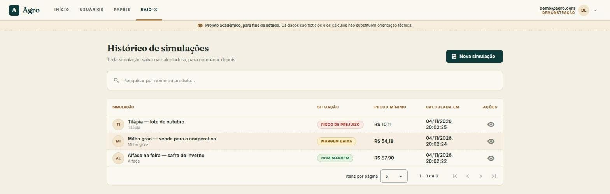

Destaque · projeto acadêmicoFeatured · academic project
Agro · Raio-X do preço mínimominimum price
Plataforma multi-tenant para o produtor rural descobrir o menor preço que cobre os custos da produção. O cálculo roda no back-end, em BigDecimal, e a tela só apresenta o resultado com um semáforo.Multi-tenant platform that helps farmers find the lowest price that covers production costs. The calculation runs on the back end with BigDecimal, and the UI only presents the result with a traffic-light status.
- Isolamento por produtor com filtro do Hibernate e escopo resolvido a cada requisição.Per-tenant isolation with Hibernate filters and scope resolved on every request.
- JWT com refresh token rotativo, papéis e permissões por endpoint e limite de tentativas de login.JWT with rotating refresh tokens, roles and per-endpoint permissions, and login rate limiting.
- API documentada com OpenAPI/Swagger, migrations com Flyway e deploy no Render com PostgreSQL (Neon).API documented with OpenAPI/Swagger, Flyway migrations and deployment on Render with PostgreSQL (Neon).
o que mudou · nov 2026what changed · Nov 2026
- Visual novo no front, com o print atualizado.New front-end look, with an updated screenshot.
- Cálculo do Raio-X movido para o back e valores no padrão brasileiro.Raio-X calculation moved to the back end and values in Brazilian format.
- Entrada como visitante e API documentada com OpenAPI/Swagger.Visitor sign-in and an API documented with OpenAPI/Swagger.
Java 25QuarkusPostgreSQLAngular 21Docker
Na demo, use o botão “Entrar como visitante”. O servidor gratuito pode levar até 1 minuto para responder no primeiro acesso.In the demo, use the “Entrar como visitante” (visitor) button. The free server may take up to 1 minute to respond on first access.